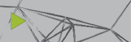
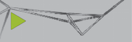
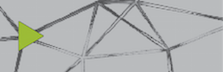

Welcome to Processing for Android! In this tutorial you will learn how to setup your system to develop in Android. |
|

How to distribute your sketches as apps that other users can install. |

This tutorial explains how to use Android Studio to develop Processing apps. |
A more complex tutorial on writing a VR experience for Cardboard. |
")